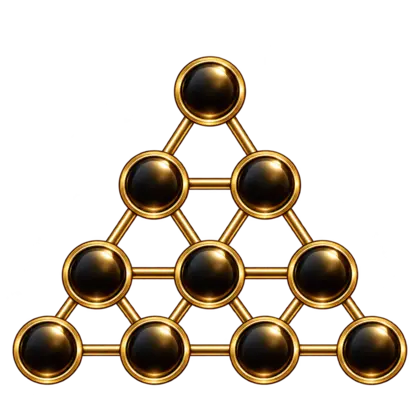

★★★★★
“O curso é excelente para todos os níveis. A conexão entre a Cabala e o Tarot é apresentada com riqueza e clareza.”
Tarot • Cabala • Hermetismo
Conhecimento profundo transformado em prática para quem deseja compreender os símbolos e desenvolver uma leitura consciente.
Psicoterapeuta, taróloga e numeróloga cabalista há mais de 10 anos.
Reuniu seu estudo de Hermetismo e a fundamentação de grandes mestres de ordens iniciáticas em um método prático, estruturado e consciente para o Tarot.
“O curso é excelente para todos os níveis. A conexão entre a Cabala e o Tarot é apresentada com riqueza e clareza.”
“Foi um verdadeiro divisor de águas. Hoje me sinto muito mais confiante nas leituras e preparada para orientar outras pessoas.”
“A didática é clara, acolhedora e profunda. Evoluí como taróloga e também como ser humano.”

Uma formação progressiva sobre os 78 arcanos, caminhos da Árvore da Vida, Sephiroth, métodos de tiragem, ética e prática profissional.
Uma jornada prática dedicada à estrutura, aos símbolos e à leitura do Tarot de Thoth.
Página em preparaçãoUm espaço de aprofundamento e direcionamento para estudos herméticos.
Em construçãoNão. A formação recebe tanto iniciantes quanto pessoas que já leem Tarot e querem desenvolver mais estrutura e profundidade.
O acesso ao material gravado é vitalício, permitindo estudar e rever as aulas no seu próprio ritmo.
Sim. A metodologia percorre Arcanos Maiores, Arcanos Menores, cartas da corte e suas correspondências cabalísticas.
Sim. A formação é progressiva e recebe uma nova aula de aprofundamento com mais de uma hora a cada quinze dias.
Sim. Há certificado ao final do curso e um grupo exclusivo de alunos para interação e comunicados.